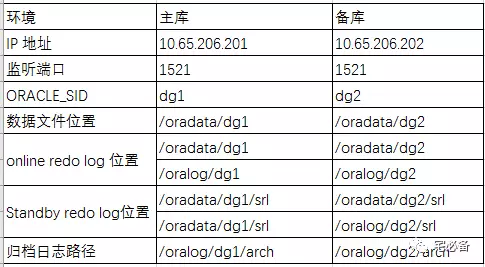
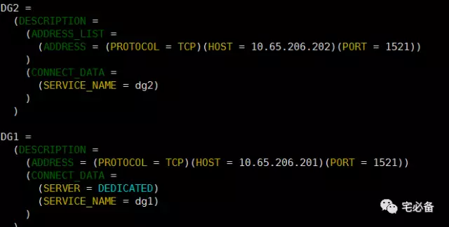
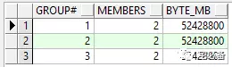

一步步搭建物理备库
从这期开始讲Oracle Data Guard方面的内容
Data Guard作为Oracle提供的一个高可用及灾备解决方案,理解并可以实施它对于DBA来说是非常重要套的技能
经过前面的讲解我们对Data Guard 已经有了一定的认识，今天讲如何一步步搭建Oracle 11g 物理备库
推荐在创建的过程中打开alert日志方便查看报错信息
tail -f alert_dg2.log
Data Guard 环境规划

1. 主库环境准备
1.1 主库监听及服务名设置
首先需要启用dg1的监听服务
lsnrctl start
然后配置tnsnames文件增加dg1 dg2的条目

1.2 启用强制日志记录
SQL> ALTER DATABASE FORCE LOGGING;
1.3 创建密码文件
默认新建数据库已经创建如果没有则需要创建
注意：如修改了sys密码，需重新拷贝至备库
具体请参考如下连接
1.4 创建standby redo log(可选)
虽然SRL只是数据库处于Standby状态才会使用
但是还是建议在主库上创建SRL，为了角色切换后能接收传过来redo data
这里我们就不创建了
1.5 启用归档
SQL>STARTUP MOUNT;
SQL>ALTER DATABASE ARCHIVELOG;
1.6 主库参数文件设置
下面参数的后半段为当主库角色变为备库时生效
vim initdg1.ora
*.db_name='dg1'
*.DB_UNIQUE_NAME='dg1'
*.LOG_ARCHIVE_CONFIG='DG_CONFIG=(dg1,dg2)'
*.log_archive_dest_1='LOCATION=/oralog/dg1/arch
VALID_FOR=(ALL_LOGFILES,ALL_ROLES)
DB_UNIQUE_NAME=dg1'
*.log_archive_dest_2='
SERVICE=dg2 LGWR SYNC AFFIRM
VALID_FOR=(ONLINE_LOGFILES,PRIMARY_ROLE)
DB_UNIQUE_NAME=dg2'
*.LOG_ARCHIVE_DEST_STATE_1='ENABLE'
*.LOG_ARCHIVE_DEST_STATE_2='ENABLE'
*.REMOTE_LOGIN_PASSWORDFILE='EXCLUSIVE'
*.LOG_ARCHIVE_FORMAT='%t_%s_%r.arc'
*.LOG_ARCHIVE_MAX_PROCESSES=30
#Parameter for standby role
*.FAL_CLIENT='dg1'
*.FAL_SERVER='dg2'
*.DB_FILE_NAME_CONVERT='/oradata/dg2','/oradata/dg1'
*.LOG_FILE_NAME_CONVERT='/oradata/dg2','/oradata/dg1'.'/oralog/dg2','/oralog/dg1'
*.STANDBY_FILE_MANAGEMENT='AUTO'
2. 备库环境准备
2.1 备库监听及服务名设置
首先需要启用dg1的监听服务
lsnrctl start
然后配置tnsnames文件增加dg1 dg2的条目
2.2 参数文件及密码文件拷贝
拷贝主库上的密码文件和参数文件至相应目录并改名
scp $ORACLE_HOME/dbs/initdg1.ora oracle@10.65.206.202:/u01/app/oracle/product/11.2.0/db_1/dbs
scp $ORACLE_HOME/dbs/orapwdg1 oracle@10.65.206.202:/u01/app/oracle/product/11.2.0/db_1/dbs
mv initdg1.ora initdg2.ora
mv orapwdg1 orapwdg2
2.3 创建必要的文件夹
[oracle@dg2 dbs]$ mkdir -p /u01/app/oracle/admin/dg2/adump
[oracle@dg2 dbs]$ mkdir -p /oralog/dg2/
[oracle@dg2 dbs]$ mkdir -p /oradata/dg2/
[oracle@dg2 dbs]$ mkdir -p /oradata/dg2/srl
[oracle@dg2 dbs]$ mkdir -p /oralog/dg2/srl
[oracle@dg2 dbs]$ mkdir -p /oralog/dg2/arch
[oracle@dg2 dbs]$ mkdir -p /oradata/rman
2.4 修改参数文件以用于备库环境
vim initdg2.ora
*.db_name='dg1'
*.DB_UNIQUE_NAME='dg2'
*.LOG_ARCHIVE_CONFIG='DG_CONFIG=(dg1,dg2)'
*.log_archive_dest_1=
'LOCATION=/oralog/dg2/arch
VALID_FOR=(ALL_LOGFILES,ALL_ROLES)
DB_UNIQUE_NAME=dg2'
*.log_archive_dest_2=
'SERVICE=dg1 LGWR ASYNC
VALID_FOR=(ONLINE_LOGFILES,PRIMARY_ROLE)
DB_UNIQUE_NAME=dg1'
*.LOG_ARCHIVE_DEST_STATE_1=ENABLE
*.LOG_ARCHIVE_DEST_STATE_2=ENABLE
*.REMOTE_LOGIN_PASSWORDFILE=EXCLUSIVE
*.LOG_ARCHIVE_FORMAT=%t_%s_%r.arc
*.LOG_ARCHIVE_MAX_PROCESSES=30
# Parameter for standby role
*.FAL_SERVER=dg1
*.FAL_CLIENT=dg2
*.DB_FILE_NAME_CONVERT='/oradata/dg1','/oradata/dg2'
*.LOG_FILE_NAME_CONVERT='/oradata/dg1','/oradata/dg2','/oralog/dg1','/oralog/dg2'
*.STANDBY_FILE_MANAGEMENT=AUTO
3. 开始建立物理备库
3.1 主库上使用RMAN备份主库
RMAN>BACKUP AS BACKUPSET DATABASE format '/oradata/rman/bk_full_%U_%d.dbf' PLUS ARCHIVELOG format '/oradata/rman/bk_log_%U.dbf';
3.2 主库上创建备库的控制文件*
SQL> ALTER DATABASE CREATE STANDBY CONTROLFILE AS '/tmp/standby.ctl';
3.3 拷贝rman备份文件和standby control file至备库
scp /oradata/rman/* oracle@10.65.206.202:/oradata/rman
scp /tmp/standby.ctl oracle@10.65.206.202:/oradata/rman
3.4 使用RMAN 还原备库
3.4.1 启动备库至nomount状态
SQL>startup nomount pfile='/u01/app/oracle/product/11.2.0/db_1/dbs/initdg2.ora';
SQL> create spfile from pfile;
3.4.2 恢复standby 控制文件
RMAN>restore controlfile from '/oradata/rman/standby.ctl';
3.4.3 启动备库至mount状态
RMAN>alter database mount standby database;
3.4.4 restore 备库文件
RMAN>catalog start with '/oradata/rman/';
RMAN>restore database;
3.5 备库创建standby redo log
强烈建议无论什么保护模式都需要创建Standby redo log
3.5.1 查看主库redo log情形
SELECT group#, members, bytes byte_mb, status FROM v$log;

3.5.2 创建standby redo log
这里我们创建4个SRL日志组
alter database add standby logfile group 10 ('/oradata/dg2/srl/srl10a.log','/oralog/dg2/srl/srl10b.log') size 52428800;
alter database add standby logfile group 11 ('/oradata/dg2/srl/srl11a.log','/oralog/dg2/srl/srl11b.log') size 52428800;
alter database add standby logfile group 12 ('/oradata/dg2/srl/srl12a.log','/oralog/dg2/srl/srl12b.log') size 52428800;
alter database add standby logfile group 13 ('/oradata/dg2/srl/srl13a.log','/oralog/dg2/srl/srl13b.log') size 52428800;
3.5.3 Standby redo log最佳实践
-
请确保SRL的大小和主库的redo size相同，请使用bytes指定
-
SRL日志组数量至少比主库多1个,RAC环境中需要考虑到所有instance
-
不要给SRL分配thread号，这样所有thread都可以使用该SRL，甚至是RAC环境
-
建议在主库也建立Standby redo log，这样在switchover后原主库可以使用实时同步功能
3.6 备库开启同步
实时同步
SQL>ALTER DATABASE RECOVER MANAGED STANDBY DATABASE USING CURRENT LOGFILE DISCONNECT;
非实时同步
SQL>alter database recover managed standby database disconnect from session;
取消同步
alter database recover managed standby database cancel;
好了，到这里我们已经可以搭建Oracle 物理备库了,下节将介绍Data Guard日常的一些运维操作